Электромагниты. Источники
питания электромагнитов
Электромагниты
Электромагниты предназначены для генерации постоянных,
переменных или импульсных магнитных полей в некоторой пространственной области
(рабочей зоне) с возможностью регулировки магнитной индукции посредством
изменения действующего значения или амплитуды тока в обмотках. Создаваемое в
рабочей зоне поле может быть как по возможности однородным, так и специально
неоднородным с заданным градиентом. Электромагниты могут использоваться для
намагничивания и размагничивания постоянных магнитов, изучения магнитных свойств
веществ при работе в составе магнитометров, калибровки приборов для измерения
магнитных полей [4], проведения экспериментов,
требующих применения магнитного поля, и т. п. В качестве импульсных
электромагнитов могут рассматриваться и использоваться и некоторые из
специализированных устройств [6,
7].
Малогабаритный электромагнит для
получения постоянного однородного магнитного поля с магнитной индукцией до 1.5
Тл
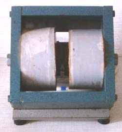
Электромагнит для получения
постоянного однородного магнитного поля с индукцией до 1.2 Тл в зазоре диаметром
80 мм высотой 20 мм
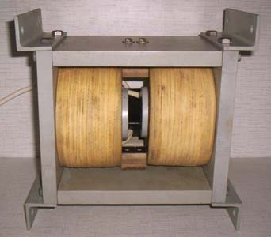
Универсальный двухкатушечный
электромагнит изменяемой конфигурации
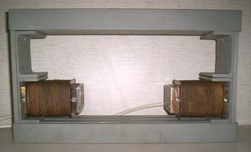
Электромагнит для
получения переменного однородного магнитного поля с индукцией до 0.3 Тл в зазоре
сечением 60 х 60 кв. мм высотой 20 мм
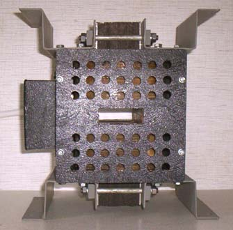
Электромагнит для получения
переменного однородного магнитного поля с индукцией до 0.5 Тл в зазоре сечением
40 х 40 кв. мм высотой 10 мм
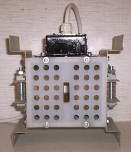
Квадрупольный
электромагнит постоянного и переменного тока (диаметр полюсных наконечников 15
мм, зазоры до 30 мм)
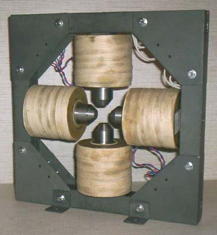
Индуктор продольного магнитного поля с рабочей зоной щелевого типа объемом 10 х
110 х 80 куб. мм
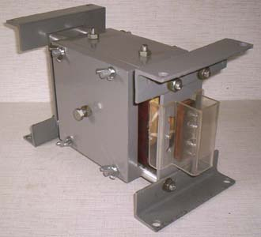
Соленоидальный индуктор для генерации постоянного однородного магнитного поля в
цилиндрической зоне диаметром 30 мм высотой до 126 мм
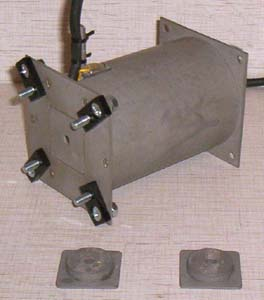
Источники питания электромагнитов
Для возбуждения тока в обмотках электромагнита при работе в
непрерывном режиме могут использоваться источники питания, обеспечивающие на
выходе регулируемое или нерегулируемое постоянное или переменное напряжение
(ток). В частности, при генерации переменного магнитного поля в качестве
источника тока может служить регулируемый автотрансформатор (ЛАТР) или
низкочастотный генератор с усилителем мощности [5].
При этом для увеличения тока в обмотках и согласования с источником применяются
компенсаторы реактивной мощности [8]. При работе в
импульсном режиме применяются различные импульсные генераторы напряжения или
тока [1 - 3].
Блок питания электромагнита
регулируемый
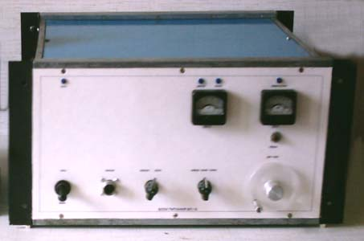
Импульсный
регулируемый блок питания 0 ... -50 В с максимальным выходным током до 20 А и
двухканальным внешним управлением
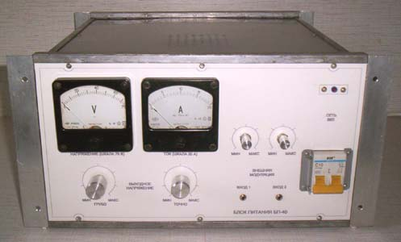
Источник питания
повышенной мощности напряжением 12.6 В (замена аккумуляторной батареи)
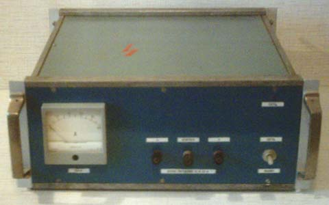
Однофазный
тринисторный регулятор мощности в активно-индуктивной нагрузке
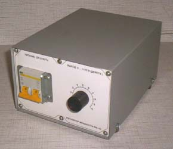
Линейный
регулируемый блок питания с постоянным выходным напряжением +1.25 ... +19 В и
выходным током до 5 А
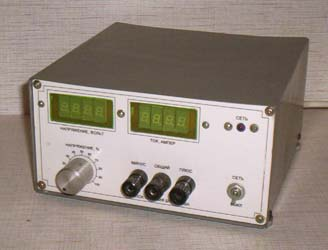
Проводятся разработки новых конструкций электромагнитов и
блоков питания к ним.
Ссылки:
- Генератор мощных
импульсов тока однополярный
- Генератор мощных
импульсов тока биполярный
- Генератор мощных импульсов
тока (емкостной накопитель энергии)
- Приборы для
измерения магнитных полей
- Усилитель
мощности низкой частоты для генератора сигналов Г3-118
- Установки
импульсного намагничивания и размагничивания постоянных магнитов
- Устройства и
установки для генерации сильных импульсных магнитных полей
-
Устройства
компенсации реактивной мощности электромагнитов переменного тока
Словарь
терминов:
- Индуктор - генератор индукции.
- ЛАТР - лабораторный автотрансформатор.
- Магнитная индукция - вектор, численно
равный пределу отношения силы, действующей со стороны магнитного поля на
элемент проводника с электрическим током, к произведению тока и длины
элемента проводника, если длина этого элемента стремится к нулю, а элемент
так расположен в поле, что этот предел имеет наибольшее значение, и
направленный перпендикулярно к направлению элемента проводника и к
направлению силы, действующей на этот элемент со стороны магнитного поля,
причем из его конца вращение по кратчайшему расстоянию от направления силы к
направлению тока в элементе проводника должно быть видно происходящим против
часовой стрелки.
- Магнитное поле - разновидность
электромагнитного поля, создаваемая движущимися электрическими зарядами или
токами и оказывающая силовое воздействие на движущиеся электрические заряды
или токи.
- Магнитометр - прибор для магнитных
измерений.
- Однородное магнитное поле - магнитное
поле, в каждой точке которого вектор магнитной индукции имеет одни и те же
направление и величину.
- Постоянный магнит
- объект, создающий магнитное поле за счет собственных внутренних
элементарных электрических токов, текущих без использования внешнего
источника энергии в составляющем объект материале.
- Тесламетр (гауссметр) - прибор для
измерения магнитной индукции.
- Электромагнит
- устройство, содержащее катушку индуктивности и магнитный контур
(цепь).
04.06.2018
01.09.2018
23.05.2019
09.10.2019
15.01.2023
31.12.2024
Альтернативные источники
энергии
Компьютеры и
Интернет
Магнитные поля
Механотронные системы
Перспективные
разработки
Электроника и
технология
Главная страница